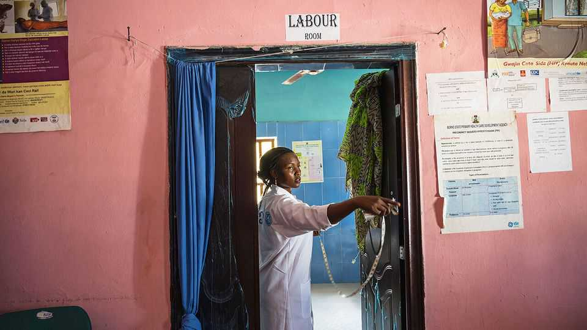

Too many Nigerian women are still dying in childbirth
The government has been woefully slow to address the problem

Sep 10th 2026
On Peculiar Umensofor’s first day on the labour ward, the young nurse says she watched as a patient’s amniotic sac began to bulge out onto the bed. Though it was still intact, this was an emergency for a 26-week-old pregnancy. Luckily for the mother and her child, it was happening at a hospital in Nigeria’s relatively wealthy Lagos state, with the staff and equipment to perform a life-saving Caesarean section. Thousands of expectant mothers across Nigeria would not be as lucky if their own pregnancies were to take such a turn. Bosede Afolabi, an obstetrics professor at the University of Lagos who also supports pregnant women in poorer parts of the state, recalls travelling in canoes and on tricycles to reach patients.

Around the world, the share of women dying in childbirth has been declining for decades, except for a brief uptick during the covid-19 pandemic (see chart). That includes sub-Saharan Africa, even though its share of the world’s maternal deaths is still disproportionately high at 70% (in 2021 around 30% of the world’s babies were born in the region). Yet Nigeria, the continent’s most populous country, stands out as both particularly dangerous for expectant mothers and particularly slow to improve. In 2023 nearly one in every 100 women giving birth there died, reckons the World Health Organisation, a share only slightly lower than 20 years ago.
The most common deadly complication in pregnancy, in Nigeria as elsewhere, is post-partum haemorrhaging, or rapid blood loss after delivery. Globally, some 45,000 women are estimated to die this way every year. The risk is aggravated by being pregnant with more than one baby, having high blood pressure or living with fibroids, growths in the womb that are especially common in black women. Severe anaemia and sickle-cell disease, both common problems in Nigeria, also increase the risk. So does having had lots of children before, as many Nigerian women do.
Yet elsewhere in the world, including in African countries with similar risk factors, improved access to hospitals and clinics and the spread of relatively simple technologies has made giving birth much less deadly. A cheap plastic drape measures how much blood a mother is losing, so doctors and midwives know when to intervene. International guidelines have been updated to encourage clinicians to make that call sooner. The bundle of drugs to stop the bleeding now costs just $3; cheap antibiotics can fight post-partum sepsis. Because of all this, plus early and regular prenatal care, such as iron tablets taken during pregnancy to combat anaemia, the global picture has notably improved.
Nigerian women, by contrast, often still lack access to even basic maternal care. Giving birth in hospital costs money, unlike in, say, India, where the free provision of maternal care was one factor in rapidly lowering mortality. And less than 7% of Nigerians have health insurance. Many poor women (and their husbands, who often control the family’s money) view going to a clinic or a hospital as an expensive luxury and register their pregnancies late or not at all. Especially in the countryside, many prefer traditional birth attendants, who are cheaper but rarely have proper medical training. As a result, many women miss out on antenatal care that can spot early signs of irregularities. Too few births are supervised by skilled professionals. Around half of all women giving birth in Nigeria do so in the presence of a qualified health worker, compared with 97% in South Africa and 98% in France.
Those who want to go to a clinic may not make it there. Ambulances are few and far between. Outside big cities, so are decent roads. In many places, violence by insurgent groups can make it dangerous to travel to seek medical care.
Even those who make it are likely to be met with substandard care. Nigeria has less than one hospital bed for every 1,000 people, compared with 1.7 in South Africa and 5.1 in the EU, and even fewer doctors. Dr Afolabi says 90% of her students are planning to leave the country once they graduate. Only a fifth of primary health-care centres are functional, according to one survey in 2025; supplies for blood transfusions, which can save haemorrhaging women, are insufficient.
Poor co-ordination in the health-care system is another problem, says Dr Afolabi. “We know what can work, but we are not co-ordinating enough to make sure that it does,” she says. Partly because responsibility for primary and specialist services lies with different parts of the government, the system is badly integrated. Emergencies are not always referred to the correct place in time. All of this means that the approximately one-third of women who suffer serious complications in pregnancy often get help too late.
Some organisations are trying to plug the gap. One group, Birthsafe, is offering antenatal care using an app. It also trains nurses to educate people in their communities on pregnancy risks and to understand how to manage emergencies better when they happen. “They are trained to know how to buy time, so a woman doesn’t die on the road,” says Idara Umoette, a doctor and Birthsafe’s founder. The Gates Foundation, a big charity, is helping to pay for single-dose iron infusions to treat anaemia, and wearable monitors that allow health-care workers to recognise when a fetus is in distress. Another group, HelpMum, is using AI to translate emergency guidance into several Nigerian languages.
The government, at long last, is making efforts to offer basic medical training to traditional birth attendants. It also plans to upgrade primary health-care centres and provide free ambulance services in particularly deprived places. In Kano, a poor state in the north, improvement seems to be accelerating. But for now, far too many Nigerian mothers continue to die. ■
Sign up to the Analysing Africa, a weekly newsletter that keeps you in the loop about the world’s youngest—and least understood—continent.